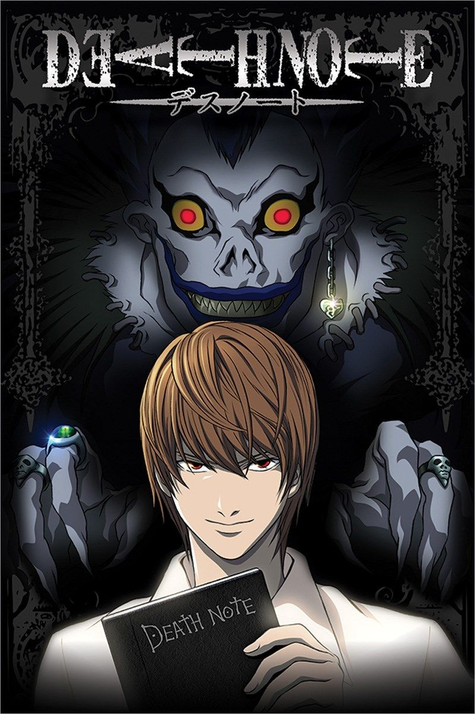

Death Note - Tsugumi Ohba and Takeshi Obata

Overview & Recap
Death Note is a mystery/psychological thriller anime based off of a manga AND DAMMMMMNNN ITS NOT POPULAR FOR NOTHING. death note is a classic and is about a genius teen (and when i say genius i mean goddamn is he smart like sir pls gimme sum of yo brain i beg share some of your smartness with me pls), Light Yagami, who discovers a deathnote. He then uses the deathnote to become a serial killer known as Kira. He actually teams up with the people hunting him (kira) down and tries to find the serial killer... which is himself... yea it gets really confusing but it all makes sense somehow
Review
I would highly recommend Death Note. The characters are developed so well and Light/Kira's whole thing is planned so well. its so intricate and complicated whilst maintating a plot-hole-less status. You could probably rewatch it a bunch and still find small details. im still in shock at how smart Light is like damnn son you got sum brains... can i have some pls i beg. theres A LOT of unexpected twists and its pretty fast paced, so you definitely won't get bored watching it. One thing i didnt really like abt it is the end bc it seemed kinda rushed and i didnt think Light would be so easily outsmarted. its on netflix go watch it GO. o and btw some people found it scary bc it is a psychological thriller so if ur not into that stuff just read a recap with pics or smth :)
Rating
i think its a solid 4/5. you should definitely watch it at least once (if you dont mind psychological thrillers of course (:)